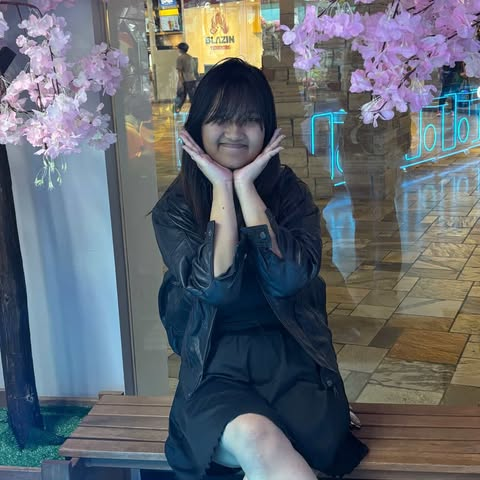

General Information:
Name: Wren Gurung
Major: Computer Science
Minor: Engineering Management
School: University of Colorado Boulder

About me!:
Hello! My name is Wren Gurung, a sophomore at CU Boulder studying computer science! I am currently working as a first year mentor for engineering freshman, in the lattice scholarship. However, I am currently interested in entry level coding positions or internships! With a focus on cybersecurity, software development, or UI/UX coding!
My resume